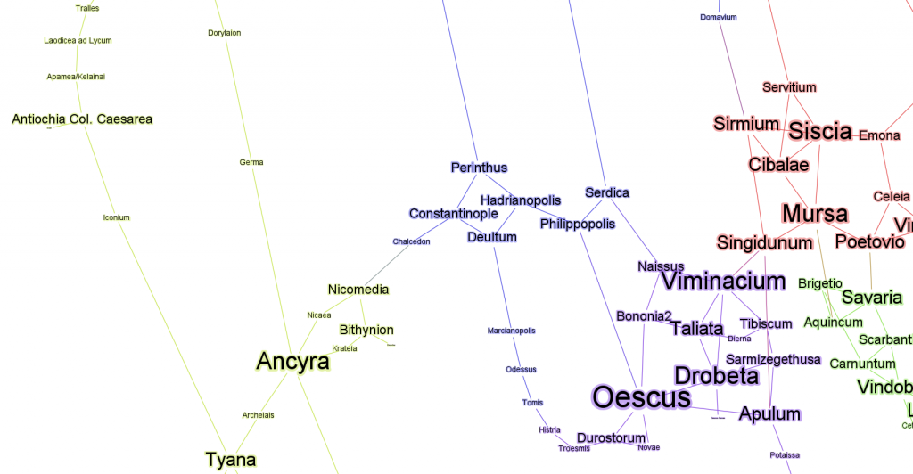
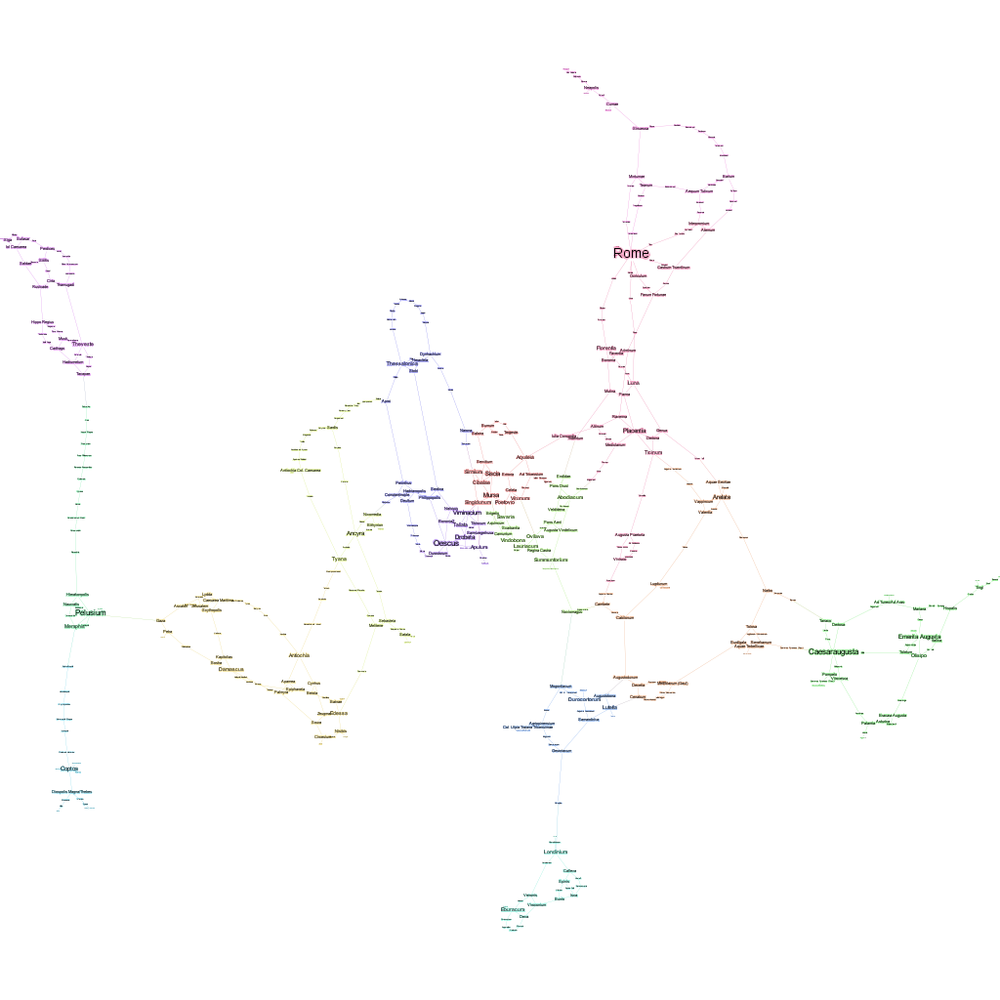

The new version of Gephi that will soon be coming out includes a brand new engine for final output, as well as a host of new features for dynamic graphs and a few other nice additions, such as font options to make your networks look better than ever:


The new preview options include setting a radius at the point where your edges start, if you don't want them to intrude on any node styling, as well as opacity options for everything and a halo effect for text.
And the PNG export, which has been available in the Gephi Toolkit, is now available at the desktop. Below is an example export of the Roman transportation network at 1024x1024px. This is a surprisingly necessary feature, given that some larger graph exports to SVG are practically unmanageable using Inkscape or Illustrator.


PNG output is one of the new options available in the upcoming release of Gephi.
The new dynamic re-sizing and re-coloring based on ranking is done through the addition of a small lock icon that, when activated, allows you to Auto Apply the size and color ramp settings you have in place and will apply the settings whenever your network changes, whether through the Dynamic timeline or more common range and partition filters.